Instalación y experiencia de escucha
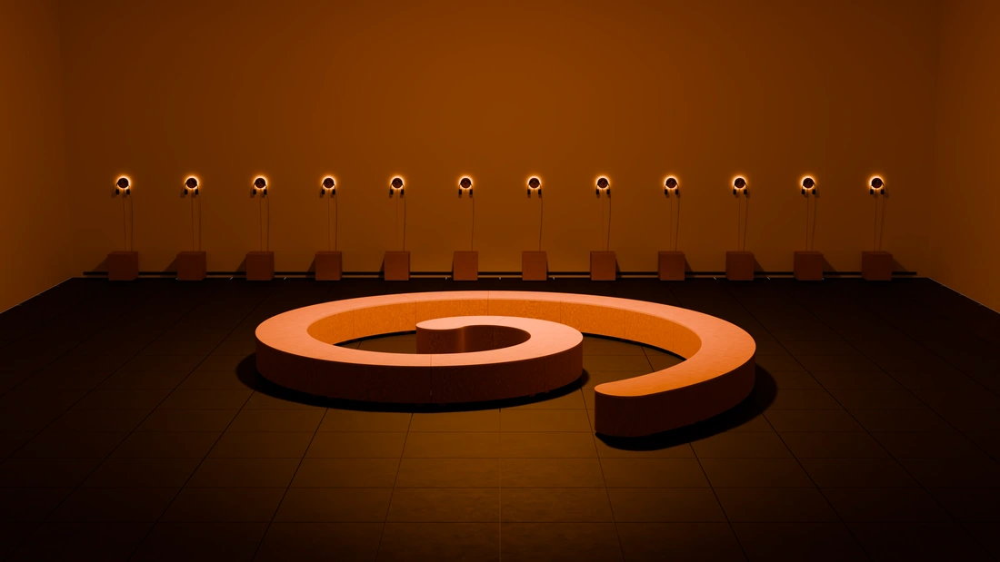
Mira la instalación desde distintos puntos.
Recorre el espacio y las estaciones de escucha.
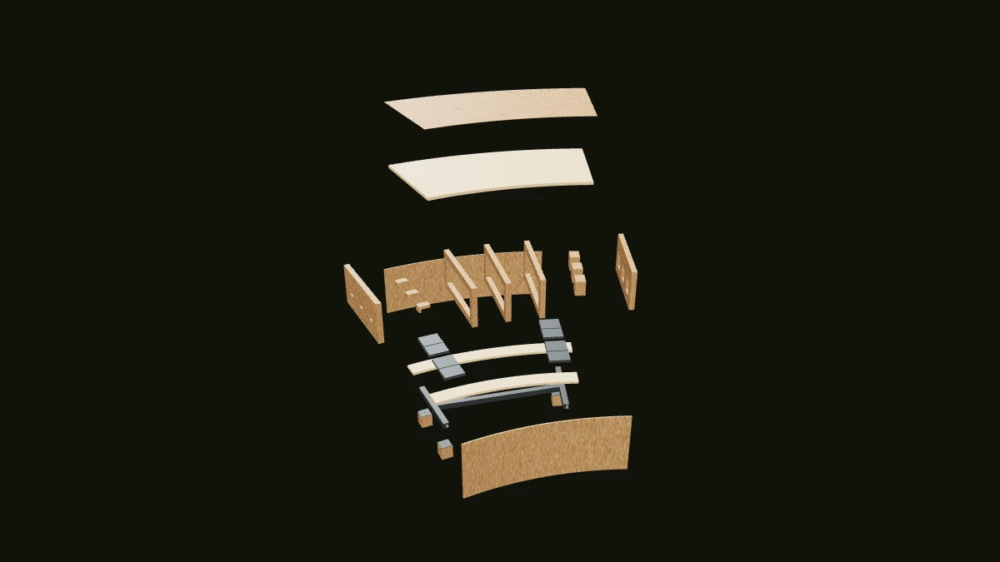
Explora las piezas y el armado del banco.
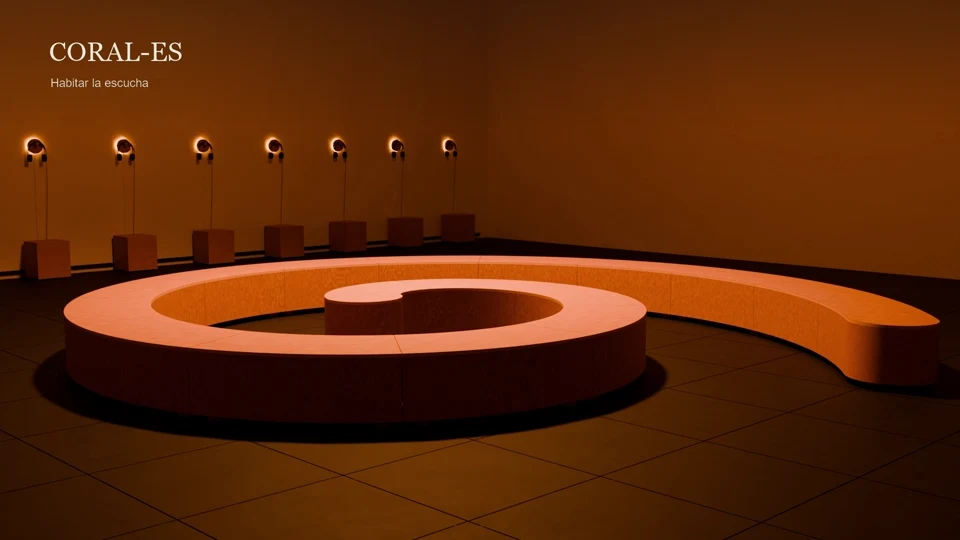
1:18 · Sin audio
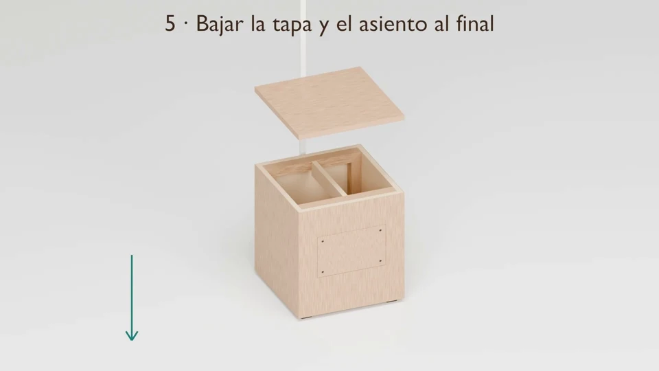
0:48 · Sin audio
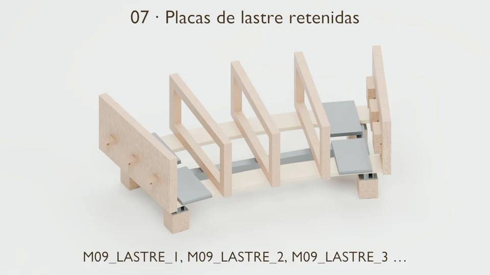
1:45 · Sin audio
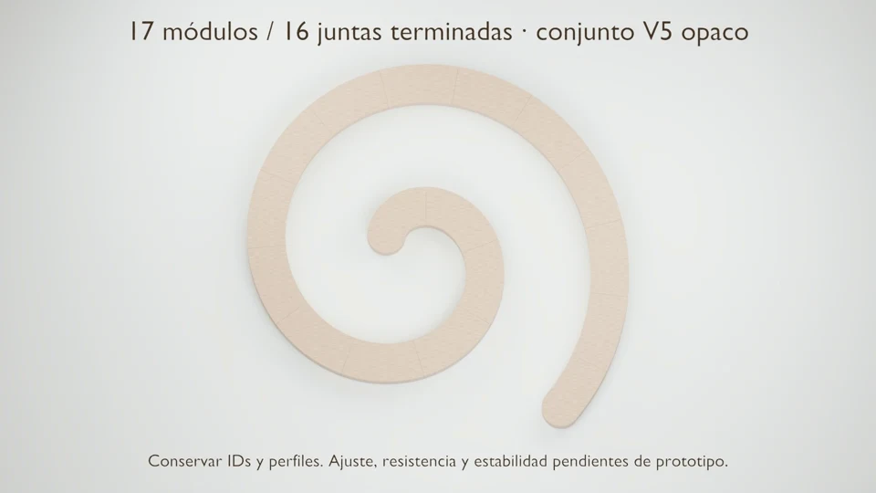
0:49 · Sin audio
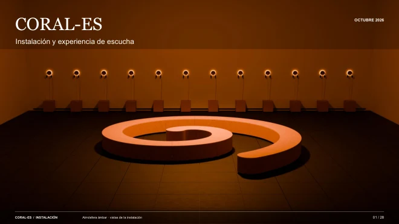
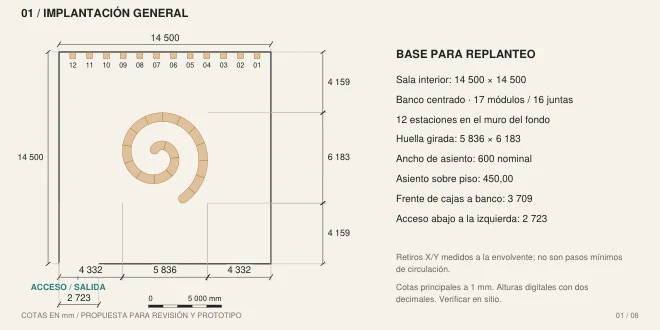
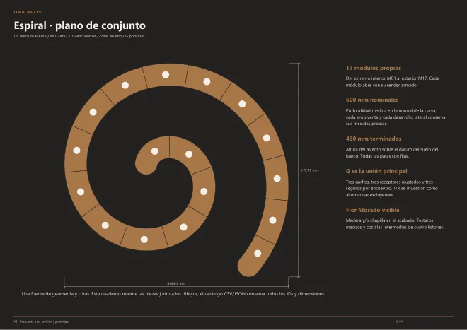
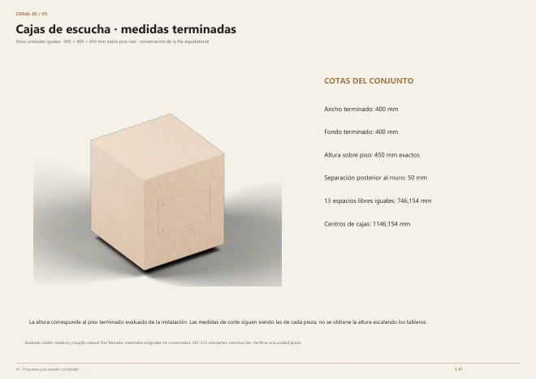
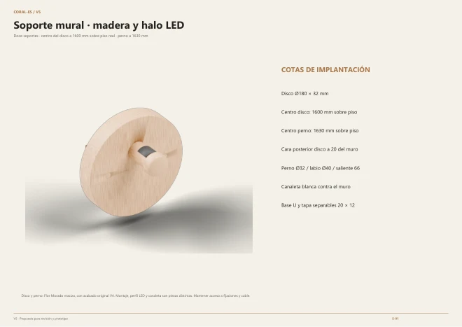
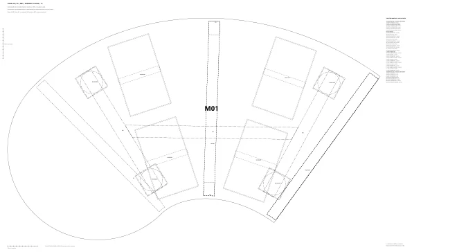